Objective
At the end of this lab you will be able to:
- Execute bash commands on Windows
GitBash - Introduction
Git Bash for Windows is a package that includes git and bash.
Git is an open-source version control system for tracking source code changes when developing software. It keeps a commit history which allows you to revert to a stable state in case you mess up your code. Git also allows multiple developers to collaborate on the same code base.
Bash is a Unix command-line shell. The name is an acronym for the ‘Bourne-Again Shell’. It comes with useful Unix commands like cat, ssh, SCP, etc., which are not usually found on Windows.
Installation Steps:
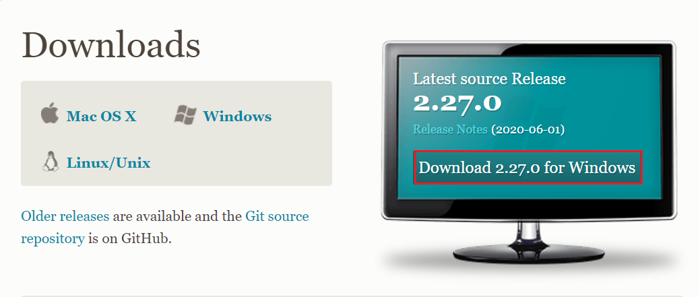
You will be redirected to a new page and it started downloading.
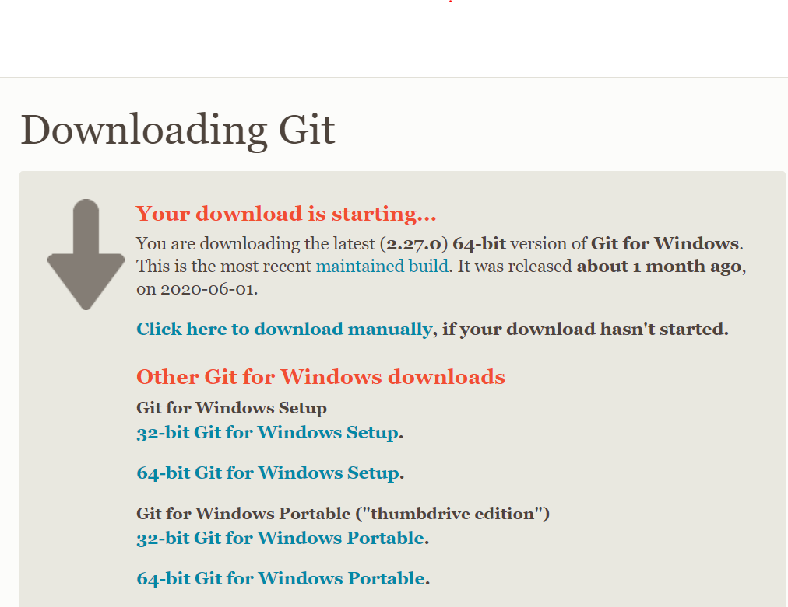
NOTE: If the download doesn't start, click on the option 'Click here to download manually'
- Open the folder where it is downloaded and open it.
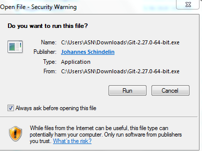
Click Run to Install.
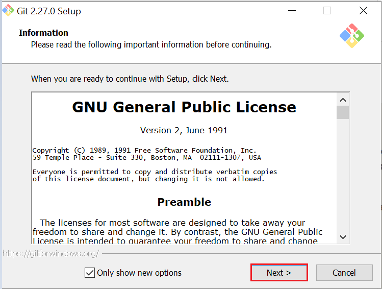
- Select the location you want to install Git Bash. I would recommend you just leave the default option as it is, and click “Next”.
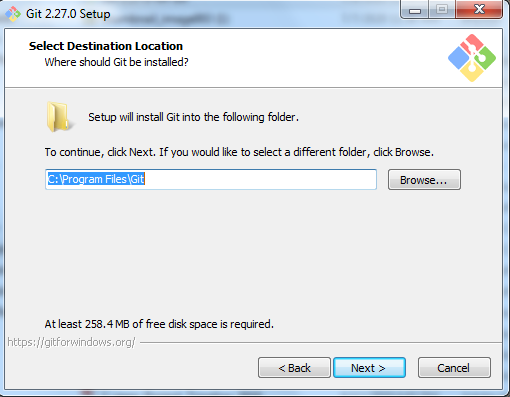
- Choose the components you want to install, or you can just proceed with the default options and click “Next”.
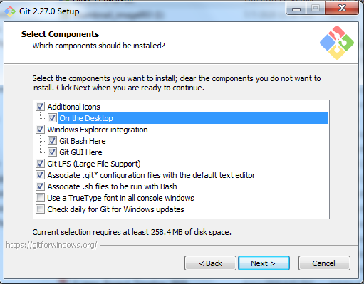
- You can change the name of start menu folder here if you want, or just leave the default name and click “Next”.
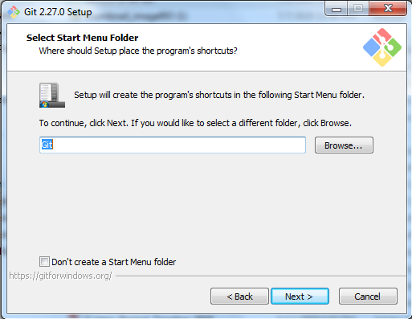
- Select the default editor for Git to use. Choose the one you like and click “Next”.
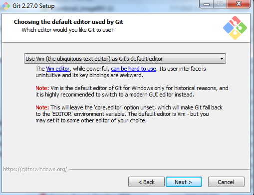
- Choose the option you want depending on where you want to use Git and click “Next”.
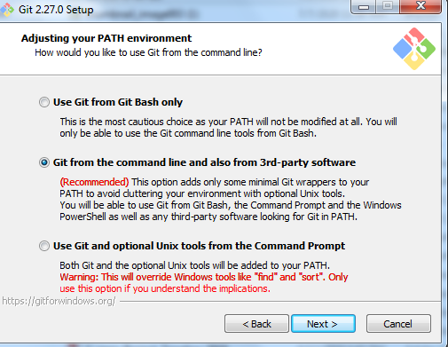
- Select “Use the OpenSSL library” and click “Next”.
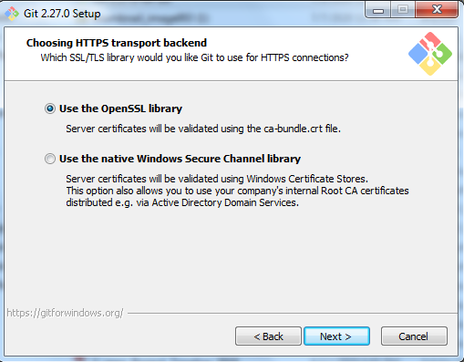
- Configure the Line Ending Conversions. Go with the default option “Checkout Windows-Style, commit Unix-style line endings”. Click “Next” to proceed.
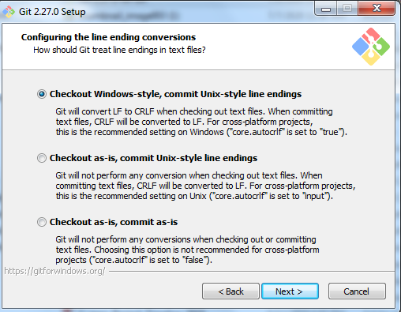
- Configure the Terminal Emulator to use with Git Bash. Default option “Use MinTTY(the default terminal of MSYS2) and click “Next”.
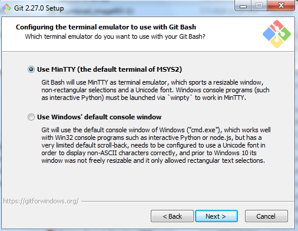
- Select the Default Behavior
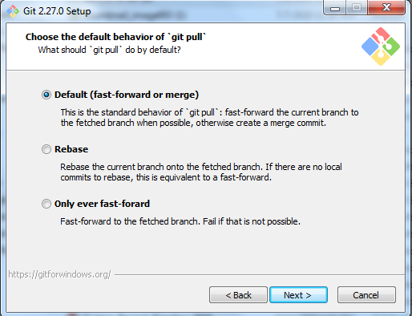
- Select the features you want(the default options are fine) and click “Next”.
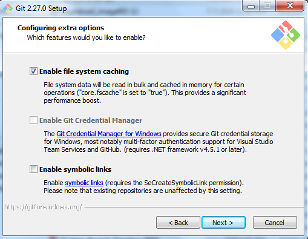
- Enable experimental options if you want. Enabling them allows you to try out newer features that are still in development
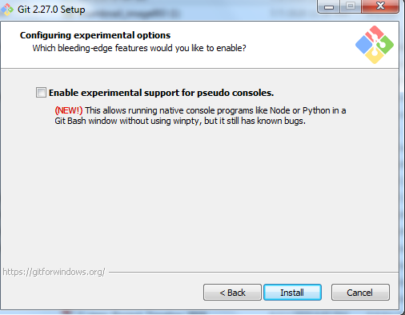
- Wait for the installation to complete and complete Git Setup Wizard
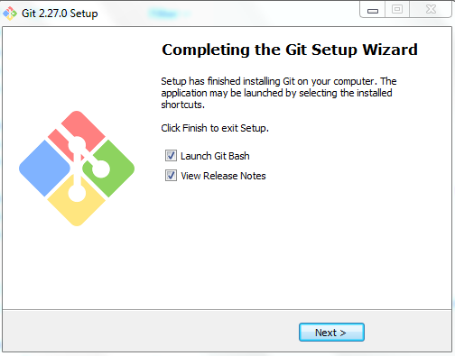
- The Git Bash terminal will now open and you will be able to enter Git and Bash commands.
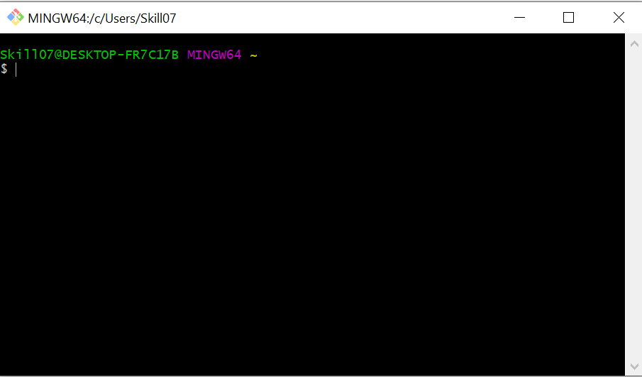